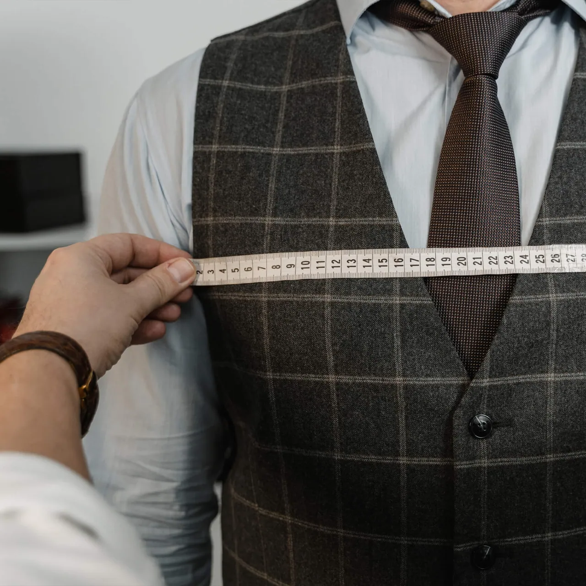
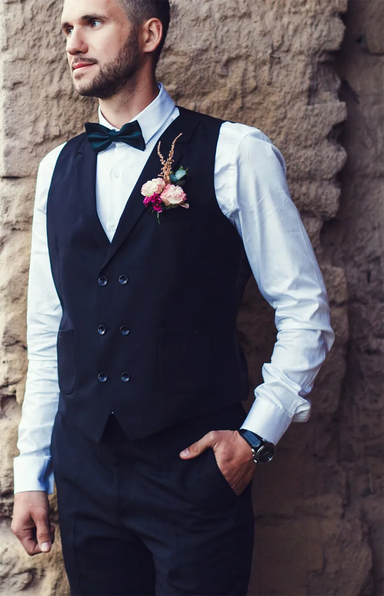
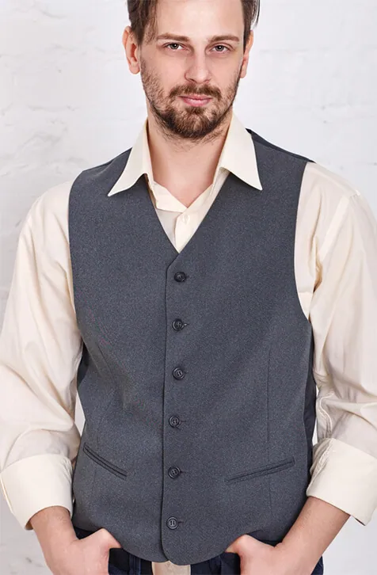
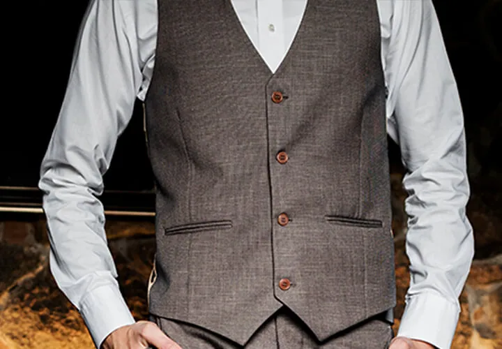
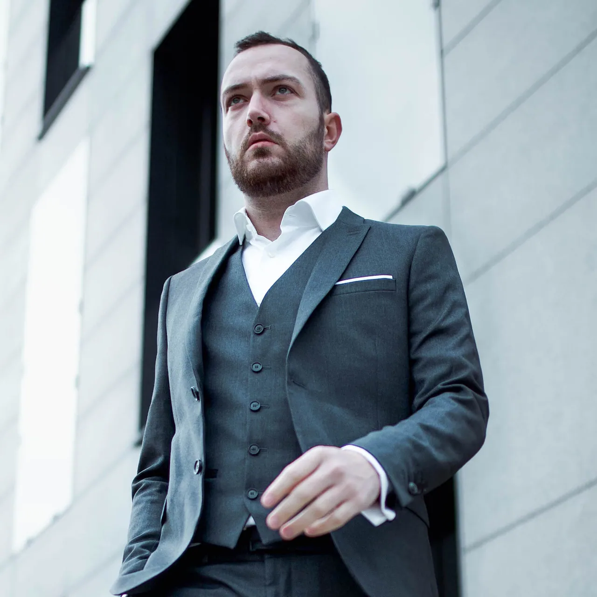
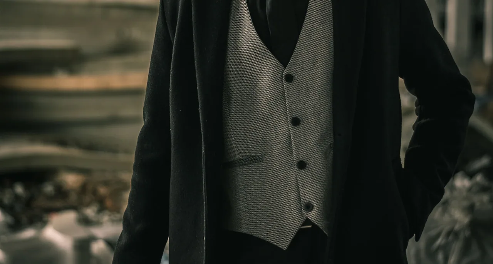
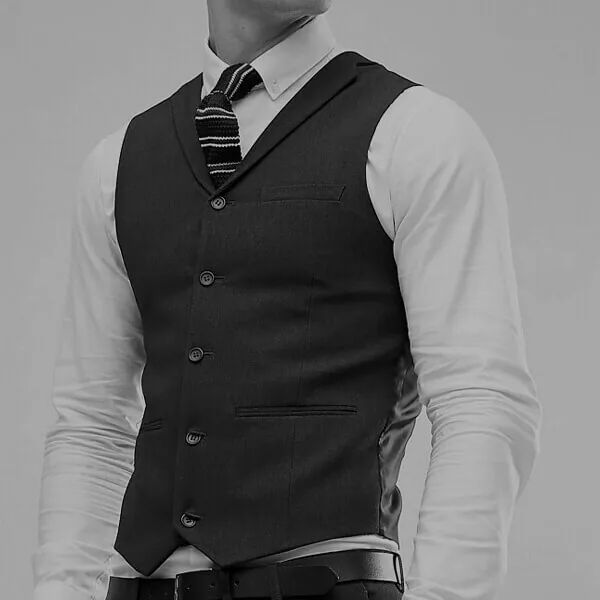

Индивидуальный пошив
Мужской жилет
Жилет в составе тройки или самостоятельная вещь. Для торжества и повседневного комплекта подберём разную глубину выреза, застёжку и ткань.

Крой и посадка
Обсудим приталенный или свободный силуэт, хлястик на спине, лацканы и двубортную застёжку. Можно выбрать классическую костюмную ткань или более выразительную фактуру.
На первой примерке
Нижний край прикрывает пояс брюк и сорочку. Проверяем, что карман и лацканы лежат ровно, воротник сорочки сохраняет форму и в жилете удобно двигаться.
Первая встреча — 1 час, первая примерка — 30 минут, финальная — 40 минут.
Какая ткань подойдёт
Для классического жилета рассмотрим шерсть, кашемир или шёлк. Бархат и атлас подойдут к торжественному образу.
Как складывается цена
Крупный принт требует запаса на совмещение. Цена также зависит от размера, состава ткани и персональной вышивки.
Ткани и поставщики

Фасоны и детали
Подборка кроя, фактур и отделки для разговора с портным.












Первая встреча
Сравним образцы и снимем мерки на Тверской, 9с7. Для посещения нужна предварительная запись.